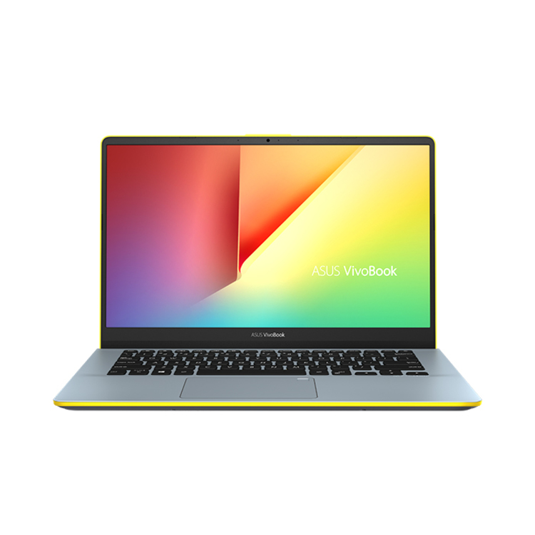

They have historically been very expensive and their use limited to high-priority computations for government-sponsored research, such as nuclear simulations and weather modeling. Today many of the computational techniques of early supercomputers are in common use in PCs. On the other hand, the design of costly, special-purpose processors for supercomputers has been supplanted by the use of large arrays of commodity processors (from several dozen to over 8,000) operating in parallel over a high-speed communications network.